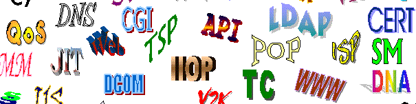

«Странные» буквы

В современном русском языке не склоняются:
- инициальные аббревиатуры (составленные из первых букв слов), кончающиеся гласным, например: МГУ, ОАО;
- заимствованные аббревиатуры, кончающиеся твердым согласным,например:MAN;
☺www.itmathrepetitor.ru☻